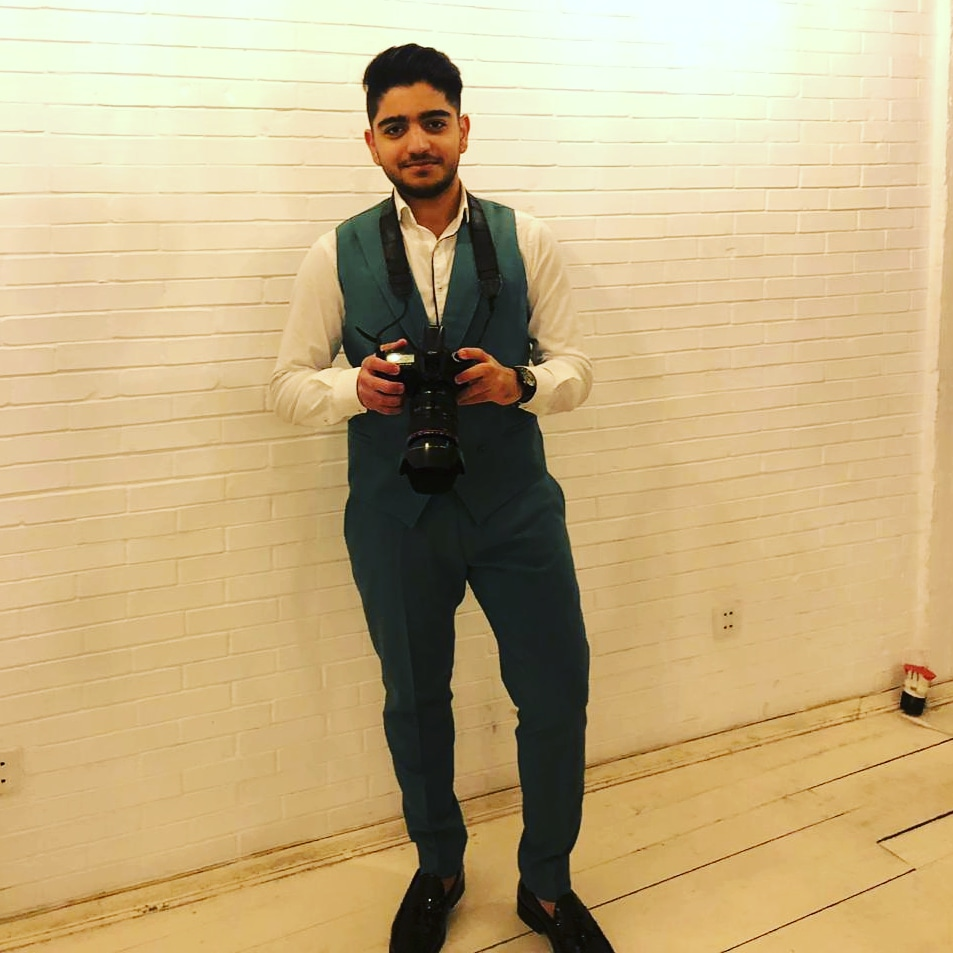

About us
“It is often hard to distinguish between the hard knocks in life and those of opportunity.”
(Frederick Phillips)
WHO ARE WE?
We hope you enjoyed our site and would love to see you again.
We would like to inform you about the founders of our site.
Our site was created from the joint work of 4 young students,
the exchange of information, ideas and opinions.
The creators of the site first went through a 3-step course
and finally created the site we use.
As I mentioned earlier, the founder of the site is 4 students, and
it is a pleasure for us to share information about them with you.
Leyla Guliyeva
Leyla Guliyeva, born July 26, 2002, is one of the founders of this site
and is currently studying computer science at ADA University. She exchanged
views with his groupmates and became one of the beloved founders of this site.
She compiled it in the Hour of Code section of our website. As for school life, Leyla
graduated from school No. 82 with a red certificate until the 10th grade and graduated
from the Turkish Solidarity Foundation Baku Turkish Lyceum.She pays special attention
to painting and counts the days to go to a painting course. She loves detective movies
and books more. One of her favorite hobbies is decorating, and handicrafts are noteworthy.
Cakes, mini-cakes, sweets that she enjoys making. As for the projects. Leyla took part in 2 projects.
The first is a grand prize winner in social business organized by Uk Government and BAKU IDEA LAB
and was awarded the 1st place.Another project was postponed as a result of Covid-19.
This project is called Arca Robotics, and Leyla was the vice-president of this project.We hope that
Leyla will implement projects and become one of the well-known engineers of the future.
Abdullah Kazimov
Abdullah Kazimov, born on March 25, 2003, is one of the founders of this site and
is currently studying information technology at ADA University. Abdullah graduated
from Sumgayit Secondary School No. 4. His special interest is in programming. His
hobbies are football and chess. Abdullah has been working in programming languages
such as C, C ++, Java, JavaScript, Python for 5 years. He learned the basics of
programming before entering university, and this continues to have a positive effect
on his education. As the founder of the site, Abdullah has established very good
cooperation with his teammates. He compiled it in the Robotics section of our website.
He won two bronze medals at the Republican Olympiad during his school years. We hope that
Abdullah will be one of the famous engineers of the future.
Elnara Mammadli

Elnara was born on January 18, 2002. Elnara is currently a student at ADA University and is
studying computer science. Elnara took an active part in the creation of this site and together
with her colleagues developed this site. She graduated from high school No. 221. She attended
English lanuage courses during his school years and had a positive impact on university life by
attending an English language course. Elnara likes to watch books and movies in the genre of horror.
She had a special interest in painting and enrolled in a painting course, but did not continue to
draw because she was preparing for university. Her hobbies include making cakes or mini-cakes and
reading fiction books. She won the first place in the School Olympiad.In the "who are we" section
of the site, it was prepared by Elnara. We hope that Elnara will be one of the famous engineers of
the future.
Toghrul Mammadli

Togrul was born on January 23, 2002. Togrul is currently studying at ADA University.
His specialty is computer science. Togrul always communicated with his teammates to
build the site and took an active part in building it. Togrul graduated from Sumgayit
City Secondary School No. 28. His special interests are swimming, irregular fighting
and playing the guitar. He enrolled in courses to make these interests more professional.
Togrul has been swimming and fighting irregularly for 10 years. In accordance with his specialty,
he enrolled in a programming language course this year. Togrul prepared in the "About the site"
section of the site. We hope that Togrul will be one of the well-known engineers of the future.